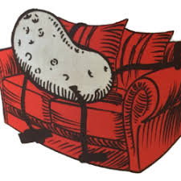

Negative aspects of sports
- Home
- Types of sports
- History of sports
- Benefits of sports
- Balance between physical and mental activities
- Cheating in sports
Negative aspects of being a couch potato
It doesn't matter how old you are you should do regularly sports. Some people think it is only sportsmen and women who need to build physical activity into their lives. There are many Issues which can happen if you don't do sports.
For example :
- Coronary Heart Disease
- strokes
- little energy
- poor posture
- overweight
Here are some advices how to be physically fit:
You need a well-developed circulation to the heart and lungs to give you the ability to keep going without gasping for breath. With stamina you have a slower more powerful heartbeat and will be able to cope more easily with prolonged or heavy exercise.
You need well toned muscles to give you the ability to do physical work. When your shoulder, trunk and thigh muscles are toned-up they will work well and you will not experience strains and injuries as often.
Developing good mobility in your neck, spine and joints will prevent you spraining ligaments and pulling muscles and tendons. You will also be less likely to experience aches and pains from stiff joints.
Cheating and doping
Cheating and doping is also a wide spread issue in sports. Many athletes use them and we don't even know it. You can get more information at the next page: Cheating in Sports
Too much fame and richness
As we said in our page Benefits of sports we showed that this could be positive. But there are also negative aspects of this!
Many people can't handle to be a professional, either they are not good enough or they don't live a healthy lifestyle. Also people who made it can get problems if they can't handle fame and richness. They get broke, they don't concentrate on their job anymore or they get depression.
It's very important to get help from your family, friends, teammates and your coaches. It's not really that easy to be a professional athlete!